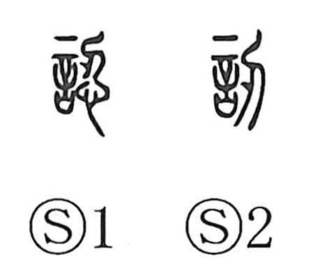

認

Kun: mitomeru | On: nin, jin
to recognize ・ to acknowledge ・ to admit
Explanation
A phono-semantic character: 言 (speech) provides the sense of statements and claims, while 忍 serves as the phonetic, yielding the on reading nin. Early lexica such as the Shuowen record the related graph 訒, “to be at a loss in speech,” but the graph 認 itself appears later. In the Three Kingdoms history (Wu Shu, biography of Zhonglímù), the phrase 縣民有識認之 shows 認識 used in the concrete sense “to lay claim to (property)”: a county resident claimed the ripened rice from Mù’s field, and similar examples are known. From this sense of asserting a claim, the verb developed to mean acknowledging or accepting that claim, which underlies the modern meaning “to recognize, to admit.”